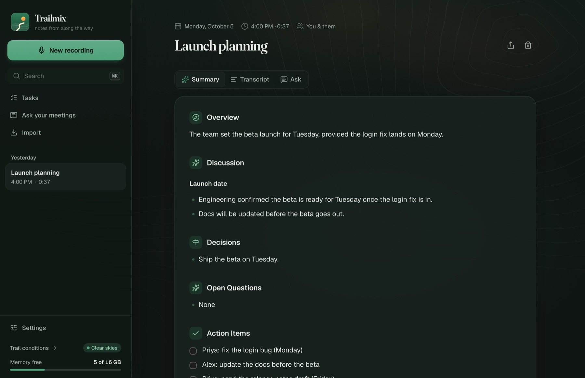

Meeting notes that stay on your Mac
Have the meeting. Trailmix hands you the notes: what was decided, who's doing what, and everything that was said, searchable. It works with any call on your Mac, and nothing leaves your computer unless you choose.
Download for Mac
Install in three steps
Two minutes, plus a one-time download of the speech models.
Open the download and drag Trailmix to Applications
Double-click Trailmix-arm64.dmg in your Downloads, then drag the Trailmix icon onto the Applications folder next to it.
Open it the first time with “Open Anyway”
Open Trailmix from Applications. macOS says it “can't verify” Trailmix and offers only Done or Move to Trash: click Done. Then:
- Open System Settings (Apple menu) → Privacy & Security.
- Scroll down to “Trailmix” was blocked to protect your Mac and click Open Anyway.
- Enter your Mac password if asked, then click Open Anyway once more.
Why: Trailmix isn't signed with a paid Apple developer certificate yet, so macOS asks you to confirm once. Updates install from inside the app without this step.
Trailmix walks you through the rest
A short checklist in the app: a sound check that makes sure both sides of your calls are heard (it tells you exactly which macOS prompts to allow), the speech models (about 1.7 GB, once), and a summary model, which it can install for you with one click, or you can use an API key for Claude, OpenAI or Gemini. Then start a call and press Record.
What it does
You have the meeting. Trailmix hands you the notes.
Stop taking notes
Press record and talk. When you hang up, the notes are there: what was decided, who's doing what by when, and what's still open.
Works with any call
Zoom, Google Meet, Teams, FaceTime or a phone call on your Mac. No bot joins, nothing to install for anyone else, nobody notices.
Your meetings stay yours
Everything happens on your Mac. Nothing is uploaded unless you choose a cloud AI to write the notes.
Find anything anyone said
Search every meeting, or just ask: "what did we decide about pricing?" The answer links back to the moment it was said.
A to-do list that writes itself
Every promise made in every meeting lands on one list, ready to tick off.
Work and life, kept apart
Your job, a committee, personal: meetings sort themselves into the right place, and you switch with one click.
Bring your history
Old meetings from Granola, transcripts from Zoom, Teams or Otter, or any audio or video file. They become notes like the rest.
Gets your world right
When it isn't sure of a name or a word, it asks with one tap, and spells it right from then on.
Want the details: models, formats, how the audio is captured? The specs are on GitHub.
Questions
What do I need?
A Mac with Apple silicon (M1 or newer) on macOS 14.2 or later. 16 GB of memory is best for local summaries; with 8 GB, use a cloud AI for summaries or a small local model.
Does anything leave my Mac?
Not by default: recording, transcription and summaries all run locally. If you add an API key for a cloud AI, only the transcript goes to that provider, to write the notes.
How do updates work?
Trailmix checks for new versions and offers to install them from its menu or window. After an update macOS asks for the microphone and system audio permissions again, until Trailmix is signed by Apple.
Windows, Linux or an Intel Mac?
Not yet. The speech engine Trailmix uses runs on Apple silicon; other platforms are planned.